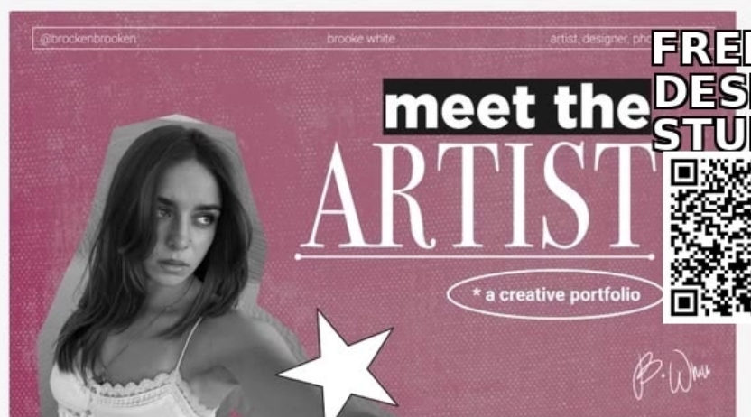
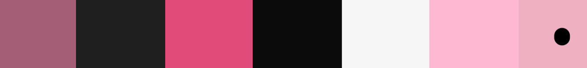
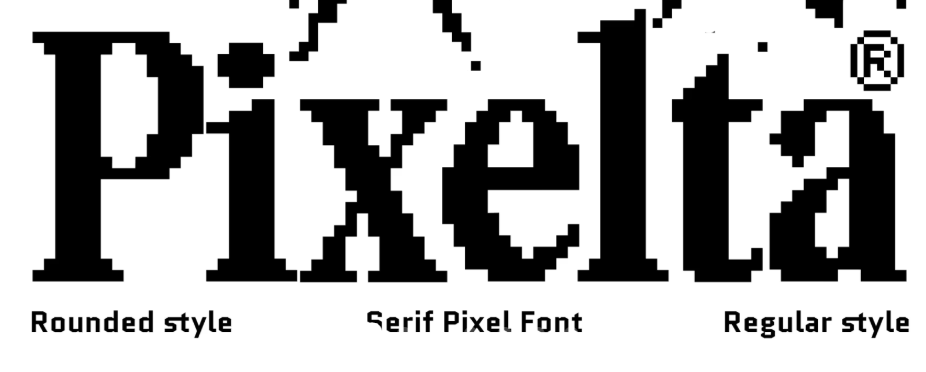

prompt
- i w ant to build a portfolio, of myself i am a btech student , of artificial intelligence and data sceinece 2028 batch my core intrest lies in design , frontend , data , ai , this is my existing portfolio : https://srushtifr.vercel.app/ , i want my hero section as the following , follow my image 1 in the prompt , meet the developer and this tagline Architecting intelligent systems. Curating digital elegance.. along with my photograph cropped just like the refrence , jagarred line , also use attacheed stickers , of 5 face star , ballon 5 face star, 4 face star, disco ball




,my photograph

now i want next section as about me , (leave a space for one more photograph of mine and section should look somthing like this (attached about myself ss) it should have empty space for film photobooth strips frames of left hand side and right hand side should have the following text
title : Hello!
textbody :
I’m Srushti.
My path into tech started early, fueled by a 12-year-old’s fascination with engineering, and has evolved into a disciplined pursuit of building things that matter. As a frontend developer and AI & Data Science undergraduate, I operate at the intersection of rigorous logic and intuitive design—translating complex data and abstract concepts into seamless digital experiences.
When I’m not shipping code or refining architectures, you’ll find me writing, illustrating, editing, or exploring the creative side of media. I live comfortably in the space between git commits and generative AI, believing that structure and intuition aren't opposites, but fuel.

- next should be tech stack which should be exactly this component :
"use client";
import { motion, useScroll, useTransform } from "framer-motion";
import ReactLenis from "lenis/react";
import React, { useRef } from "react";
import { cn } from "@/lib/utils";
type CharacterProps = {
char: string;
index: number;
centerIndex: number;
scrollYProgress: any;
};
const CharacterV1 = ({
char,
index,
centerIndex,
scrollYProgress,
}: CharacterProps) => {
const isSpace = char === " ";
const distanceFromCenter = index - centerIndex;
const x = useTransform(
scrollYProgress,
[0, 0.5],
[distanceFromCenter * 50, 0],
);
const rotateX = useTransform(
scrollYProgress,
[0, 0.5],
[distanceFromCenter * 50, 0],
);
return (
<motion.span
className={cn("inline-block text-orange-500", isSpace && "w-4")}
style={{
x,
rotateX,
}}
>
{char}
</motion.span>
);
};
const CharacterV2 = ({
char,
index,
centerIndex,
scrollYProgress,
}: CharacterProps) => {
const isSpace = char === " ";
const distanceFromCenter = index - centerIndex;
const x = useTransform(
scrollYProgress,
[0, 0.5],
[distanceFromCenter * 50, 0],
);
const scale = useTransform(scrollYProgress, [0, 0.5], [0.75, 1]);
const y = useTransform(
scrollYProgress,
[0, 0.5],
[Math.abs(distanceFromCenter) * 50, 0],
);
return (
<motion.img
src={char}
className={cn("inline-block", isSpace && "w-4")}
style={{
x,
scale,
y,
transformOrigin: "center",
}}
/>
);
};
const CharacterV3 = ({
char,
index,
centerIndex,
scrollYProgress,
}: CharacterProps) => {
const isSpace = char === " ";
const distanceFromCenter = index - centerIndex;
const x = useTransform(
scrollYProgress,
[0, 0.5],
[distanceFromCenter * 90, 0],
);
const rotate = useTransform(
scrollYProgress,
[0, 0.5],
[distanceFromCenter * 50, 0],
);
const y = useTransform(
scrollYProgress,
[0, 0.5],
[-Math.abs(distanceFromCenter) * 20, 0],
);
const scale = useTransform(scrollYProgress, [0, 0.5], [0.75, 1]);
return (
<motion.img
src={char}
className={cn("inline-block", isSpace && "w-4")}
style={{
x,
rotate,
y,
scale,
transformOrigin: "center",
}}
/>
);
};
const Skiper31 = () => {
const targetRef = useRef<HTMLDivElement | null>(null);
const targetRef2 = useRef<HTMLDivElement | null>(null);
const targetRef3 = useRef<HTMLDivElement | null>(null);
const { scrollYProgress } = useScroll({
target: targetRef,
});
const { scrollYProgress: scrollYProgress2 } = useScroll({
target: targetRef2,
});
const { scrollYProgress: scrollYProgress3 } = useScroll({
target: targetRef3,
});
const text = "see more from gxuri";
const characters = text.split("");
const centerIndex = Math.floor(characters.length / 2);
const macIcon = [
"/mac/Discord.png",
"/mac/figma.png",
"/mac/Framer.png",
"/mac/Github.png",
"/mac/Monog.png",
"/mac/notion.png",
"/mac/Pieces.png",
"/mac/Postman.png",
"/mac/vsCode.png",
];
const iconCenterIndex = Math.floor(macIcon.length / 2);
return (
<ReactLenis root>
<main className="w-full bg-white">
<div className="top-22 absolute left-1/2 z-10 grid -translate-x-1/2 content-start justify-items-center gap-6 text-center text-black">
<span className="relative max-w-[12ch] text-xs uppercase leading-tight opacity-40 after:absolute after:left-1/2 after:top-full after:h-16 after:w-px after:bg-gradient-to-b after:from-[#f5f4f3] after:to-black after:content-['']">
Scroll to see more
</span>
</div>
<div
ref={targetRef}
className="relative box-border flex h-[210vh] items-center justify-center gap-[2vw] overflow-hidden bg-[#f5f4f3] p-[2vw]"
>
<div
className="font-geist w-full max-w-4xl text-center text-6xl font-bold uppercase tracking-tighter text-black"
style={{
perspective: "500px",
}}
>
{characters.map((char, index) => (
<CharacterV1
key={index}
char={char}
index={index}
centerIndex={centerIndex}
scrollYProgress={scrollYProgress}
/>
))}
</div>
</div>
<div
ref={targetRef2}
className="relative -mt-[100vh] box-border flex h-[210vh] flex-col items-center justify-center gap-[2vw] overflow-hidden bg-[#f5f4f3] p-[2vw]"
>
<p className="font-geist flex items-center justify-center gap-3 text-2xl font-medium tracking-tight text-black">
<Bracket className="h-12 text-black" />
<span className="font-geist font-medium">
intergrate with your fav tech stack
</span>
<Bracket className="h-12 scale-x-[-1] text-black" />
</p>
<div className="font-geist w-full max-w-4xl text-center text-6xl font-bold uppercase tracking-tighter text-black">
{macIcon.map((char, index) => (
<CharacterV2
key={index}
char={char}
index={index}
centerIndex={iconCenterIndex}
scrollYProgress={scrollYProgress2}
/>
))}
</div>
</div>
<div
ref={targetRef3}
className="relative -mt-[95vh] box-border flex h-[210vh] flex-col items-center justify-center gap-[2vw] overflow-hidden bg-[#f5f4f3] p-[2vw]"
>
{" "}
<p className="font-geist flex items-center justify-center gap-3 text-2xl font-medium tracking-tight text-black">
<Bracket className="h-12 text-black" />
<span className="font-geist font-medium">
intergrate with your fav tech stack
</span>
<Bracket className="h-12 scale-x-[-1] text-black" />
</p>
<div
className="font-geist w-full max-w-4xl text-center text-6xl font-bold uppercase tracking-tighter text-black"
style={{
perspective: "500px",
}}
>
{macIcon.map((char, index) => (
<CharacterV3
key={index}
char={char}
index={index}
centerIndex={iconCenterIndex}
scrollYProgress={scrollYProgress3}
/>
))}
</div>
</div>
</main>
</ReactLenis>
);
};
export { CharacterV1, CharacterV2, CharacterV3, Skiper31 };
const Bracket = ({ className }: { className: string }) => {
return (
<svg
xmlns="http://www.w3.org/2000/svg"
fill="none"
viewBox="0 0 27 78"
className={className}
>
<path
fill="#000"
d="M26.52 77.21h-5.75c-6.83 0-12.38-5.56-12.38-12.38V48.38C8.39 43.76 4.63 40 .01 40v-4c4.62 0 8.38-3.76 8.38-8.38V12.4C8.38 5.56 13.94 0 20.77 0h5.75v4h-5.75c-4.62 0-8.38 3.76-8.38 8.38V27.6c0 4.34-2.25 8.17-5.64 10.38 3.39 2.21 5.64 6.04 5.64 10.38v16.45c0 4.62 3.76 8.38 8.38 8.38h5.75v4.02Z"
></path>
</svg>
);
};
/**
* Skiper 31 ScrollAnimation_002 — React + framer motion + lenis
*
* License & Usage:
* - Free to use and modify in both personal and commercial projects.
* - Attribution to Skiper UI is required when using the free version.
* - No attribution required with Skiper UI Pro.
*
* Feedback and contributions are welcome.
*
* Author: @gurvinder-singh02
* Website: https://gxuri.me
* Twitter: https://x.com/Gur__vi
*/
if you do not have logos use , anything for now , or ask me for loogos , this is my tech stack
Programming Languages
PythonC++TypeScriptJavaScriptJavaHTML5CSS3SQL
Frameworks & Libraries
ReactNext.jsNode.jsExpressViteTailwind CSS
Databases
MySQLMongoDBPostgreSQLSupabase
Tools & Others
Git & GitHubVS CodeFigmaCanvanpmNetlifyVercelResponsive DesignOOPData StructuresAlgorithmsData ScienceMachine LearningDeep LearningData Engineering
- after this it should have a projects section :
as follows
use this following component :
Add the "Prism Carousel" component from React Bits Pro to my project.
A coverflow that sweeps color into each new image
Steps:
- Ensure my components.json has the React Bits Pro registries configured (see https://pro.reactbits.dev/docs/installation), including the Authorization header with my REACTBITS_LICENSE_KEY environment variable.
- Install the component with:
npx shadcn@latest add @reactbits-starter/prism-carousel-tw
- Import it where needed and adapt it to my project's content and design tokens.
Docs page for reference: https://pro.reactbits.dev/docs/components/prism-carousel
5. it should have a graphics section now in which i showcase my graphics usse the following code for it
"use client";
import { motion } from "framer-motion";
import { ChevronLeftIcon, ChevronRightIcon } from "lucide-react";
import React from "react";
import {
Autoplay,
EffectCoverflow,
Navigation,
Pagination,
} from "swiper/modules";
import { Swiper, SwiperSlide } from "swiper/react";
import "swiper/css/effect-coverflow";
import "swiper/css/pagination";
import "swiper/css/navigation";
import "swiper/css";
import "swiper/css/effect-cards";
import { cn } from "@/lib/utils";
const Skiper49 = () => {
const images = [
{
src: "/images/x.com/13.jpeg",
alt: "Illustrations by my fav AarzooAly",
},
{
src: "/images/x.com/32.jpeg",
alt: "Illustrations by my fav AarzooAly",
},
{
src: "/images/x.com/20.jpeg",
alt: "Illustrations by my fav AarzooAly",
},
{
src: "/images/x.com/21.jpeg",
alt: "Illustrations by my fav AarzooAly",
},
{
src: "/images/x.com/19.jpeg",
alt: "Illustrations by my fav AarzooAly",
},
{
src: "/images/x.com/1.jpeg",
alt: "Illustrations by my fav AarzooAly",
},
{
src: "/images/x.com/2.jpeg",
alt: "Illustrations by my fav AarzooAly",
},
{
src: "/images/x.com/3.jpeg",
alt: "Illustrations by my fav AarzooAly",
},
{
src: "/images/x.com/4.jpeg",
alt: "Illustrations by my fav AarzooAly",
},
{
src: "/images/x.com/5.jpeg",
alt: "Illustrations by my fav AarzooAly",
},
{
src: "/images/x.com/6.jpeg",
alt: "Illustrations by my fav AarzooAly",
},
];
return (
<div className="flex h-full w-full items-center justify-center overflow-hidden bg-[#f5f4f3]">
<Carousel_003 className="" images={images} showPagination loop />
</div>
);
};
export { Skiper49 };
const Carousel_003 = ({
images,
className,
showPagination = false,
showNavigation = false,
loop = true,
autoplay = false,
spaceBetween = 0,
}: {
images: { src: string; alt: string }[];
className?: string;
showPagination?: boolean;
showNavigation?: boolean;
loop?: boolean;
autoplay?: boolean;
spaceBetween?: number;
}) => {
const css = `
.Carousal_003 {
width: 100%;
height: 350px;
padding-bottom: 50px !important;
}
.Carousal_003 .swiper-slide {
background-position: center;
background-size: cover;
width: 300px;
}
.swiper-pagination-bullet {
background-color: #000 !important;
}
`;
return (
<motion.div
initial={{ opacity: 0, translateY: 20 }}
animate={{ opacity: 1, translateY: 0 }}
transition={{
duration: 0.3,
delay: 0.5,
}}
className={cn("relative w-full max-w-4xl px-5", className)}
>
<style>{css}</style>
<motion.div
initial={{ opacity: 0 }}
animate={{ opacity: 1 }}
transition={{ duration: 0.3 }}
className="w-full"
>
<Swiper
spaceBetween={spaceBetween}
autoplay={
autoplay
? {
delay: 1500,
disableOnInteraction: true,
}
: false
}
effect="coverflow"
grabCursor={true}
slidesPerView="auto"
centeredSlides={true}
loop={loop}
coverflowEffect={{
rotate: 40,
stretch: 0,
depth: 100,
modifier: 1,
slideShadows: true,
}}
pagination={
showPagination
? {
clickable: true,
}
: false
}
navigation={
showNavigation
? {
nextEl: ".swiper-button-next",
prevEl: ".swiper-button-prev",
}
: false
}
className="Carousal_003"
modules={[EffectCoverflow, Autoplay, Pagination, Navigation]}
>
{images.map((image, index) => (
<SwiperSlide key={index} className="">
<img
className="h-full w-full object-cover"
src={image.src}
alt={image.alt}
/>
</SwiperSlide>
))}
{showNavigation && (
<div>
<div className="swiper-button-next after:hidden">
<ChevronRightIcon className="h-6 w-6 text-white" />
</div>
<div className="swiper-button-prev after:hidden">
<ChevronLeftIcon className="h-6 w-6 text-white" />
</div>
</div>
)}
</Swiper>
</motion.div>
</motion.div>
);
};
export { Carousel_003 };
/**
* Skiper 49 Carousel_003 — React + Swiper
* Built with Swiper.js - Read docs to learn more https://swiperjs.com/
* Illustrations by AarzooAly - https://x.com/AarzooAly
*
* License & Usage:
* - Free to use and modify in both personal and commercial projects.
* - Attribution to Skiper UI is required when using the free version.
* - No attribution required with Skiper UI Pro.
*
* Feedback and contributions are welcome.
*
* Author: @gurvinder-singh02
* Website: https://gxuri.me
* Twitter: https://x.com/Gur__vi
*/
6. lastlymy footer section should be this compoment : use the color pallet colors instead of default organge or default tone color , use my color pallet colors for this ask whatsoever data u need more for footer this is my footer data:
github id : sru36 (Srushti) https://github.com/sru36/
linkedin : https://www.linkedin.com/in/srushtirawal/
x : X https://srushtifr.vercel.app
emial id : SRUU36@GMAIL.COM
"use client"
// Halftone Wordmark Footer — a site footer whose wordmark is set enormous and
// cropped by the bottom edge, printed as a field of halftone dots. Each dot is
// sized by how much of the letter covers its cell, so the type keeps its edges
// at any scale. Move across it and the dots part around the pointer on springs,
// warming in colour as they are pushed off their place; click and a shock ring
// runs through the word. Above it sit the studio line, tracked link columns and
// a back-to-top, separated by a hairline, all over a fine print grain.
//
// One file, React only. A 2D canvas for the dots and the grain, real anchors
// for the links. Every rule in the scoped <style> is .hwf- prefixed and nothing
// is fetched: the faces come from the host page or the fallback stacks.
import * as React from "react"
export interface HalftonePalette {
/** The footer background. */
background: string
/** The dots at rest, and the text. */
ink: string
/** The colour a dot warms toward as it is pushed off its place. */
warm: string
}
export type HalftonePreset = "night" | "paper" | "ember" | "cobalt"
export interface FooterLink {
label: string
href?: string
}
export interface FooterColumn {
title: string
links: FooterLink[]
}
export interface HalftoneWordmarkFooterProps {
/** The giant word printed in dots. Lowercase reads best. */
wordmark?: string
/** Top-left studio line. */
label?: string
/** The muted line under it. */
meta?: string
/** Link columns along the top. */
columns?: FooterColumn[]
/** Show the back-to-top link. It scrolls the window to 0. Defaults to true. */
backToTop?: boolean
/** Starting colours. Defaults to "night". */
preset?: HalftonePreset
/** Colour overrides, merged over the preset. */
palette?: { background?: string; ink?: string; warm?: string }
/** Distance between dot centres, in CSS px. Defaults to 6. */
dotGap?: number
/** How far the pointer pushes, in CSS px. Defaults to 80. */
radius?: number
/** How much of the word's cap height hangs below the bottom edge, 0–0.6. Defaults to 0.2. */
crop?: number
/** Print grain over everything, 0–1. Defaults to 0.5. */
grain?: number
/** Pointer and click response. Defaults to true. */
interactive?: boolean
/** Face for the wordmark. Heavy grotesks print best. */
fontFamily?: string
/** Weight of the wordmark. Defaults to 800. */
fontWeight?: number
/** Face for the small type. */
monoFamily?: string
/** Root height. A definite length, never a percentage. */
height?: string
/** Extra root class names. */
className?: string
}
const PRESETS: { [K in HalftonePreset]: HalftonePalette } = {
night: { background: "#0c0c0b", ink: "#e9e4da", warm: "#e9762b" },
paper: { background: "#efebe3", ink: "#17150f", warm: "#c2361c" },
ember: { background: "#160a06", ink: "#f2c48c", warm: "#ff5a1f" },
cobalt: { background: "#0d1b4d", ink: "#dfe7ff", warm: "#ffcd3c" },
}
const DEFAULT_COLUMNS: FooterColumn[] = [
{ title: "Work", links: [{ label: "Index" }, { label: "Archive" }, { label: "Journal" }] },
{ title: "Studio", links: [{ label: "About" }, { label: "Process" }, { label: "Careers" }] },
{ title: "Contact", links: [{ label: "hello@halden.co" }, { label: "+47 22 00 41 00" }] },
]
const SANS_STACK = '"Inter Tight", "Inter Variable", "Inter", "Helvetica Neue", Arial, system-ui, sans-serif'
const MONO_STACK = '"JetBrains Mono", "SF Mono", ui-monospace, Menlo, Consolas, monospace'
// #region halftone
// Pure helpers, lifted out and executed by tests/halftone-wordmark-footer.test.mjs.
/** Hex → [r, g, b] in 0–255, or null for anything that isn't #rgb / #rrggbb. */
export function hwfHex(hex: string) {
const m = /^#?([0-9a-f]{3}|[0-9a-f]{6})$/i.exec((hex || "").trim())
if (!m) return null
const h = m[1].length === 3 ? m[1].split("").map((c) => c + c).join("") : m[1]
return [parseInt(h.slice(0, 2), 16), parseInt(h.slice(2, 4), 16), parseInt(h.slice(4, 6), 16)]
}
/** Dot radius for a cell coverage in [0, 1]: area-true, so tone stays even. */
export function hwfRadius(coverage: number, gap: number) {
const c = coverage < 0 ? 0 : coverage > 1 ? 1 : coverage
return Math.sqrt(c) * gap * 0.56
}
/**
* One step of a dot's spring back to home, plus the push from a pointer at
* (px, py) within radius r. Returns [x, y, vx, vy]. Away from the pointer a
* displaced dot always heads home and comes to rest.
*/
export function hwfStep(
x: number, y: number, vx: number, vy: number,
hx: number, hy: number, px: number, py: number, r: number,
) {
const dx = x - px
const dy = y - py
const d2 = dx * dx + dy * dy
if (r > 0 && d2 < r * r) {
const d = Math.sqrt(d2) + 0.001
const f = (1 - d / r) * 2.6
vx += (dx / d) * f
vy += (dy / d) * f
}
vx = (vx + (hx - x) * 0.05) * 0.84
vy = (vy + (hy - y) * 0.05) * 0.84
return [x + vx, y + vy, vx, vy]
}
/** How warm a dot is drawn: 0 at home, 1 once it is `span` px or more away. */
export function hwfWarmth(x: number, y: number, hx: number, hy: number, span: number) {
const d = Math.hypot(x - hx, y - hy)
return span > 0 ? Math.min(1, d / span) : 0
}
/** Font size that sets `measured` (width at 100px) to fill `width` exactly. */
export function hwfFitSize(measured: number, width: number) {
return measured > 0 ? (width / measured) * 100 : 0
}
// #endregion
const HWF_CSS = `
.hwf-root {
position: relative; width: 100%; overflow: hidden; isolation: isolate;
background: var(--hwf-bg); color: var(--hwf-ink); -webkit-font-smoothing: antialiased;
}
.hwf-root canvas { position: absolute; inset: 0; width: 100%; height: 100%; display: block; max-width: none; }
.hwf-top {
position: relative; z-index: 1; display: grid; grid-template-columns: minmax(0, 1.25fr) repeat(3, minmax(0, 1fr));
gap: 24px; padding: clamp(22px, 3.4vw, 40px) clamp(20px, 3.4vw, 44px) 0;
font-family: var(--hwf-mono); font-size: 10.5px; letter-spacing: .18em; text-transform: uppercase; line-height: 1.75;
}
.hwf-brand strong { display: block; font-weight: 500; }
.hwf-brand span { opacity: .45; }
.hwf-col h3 { margin: 0; font: inherit; opacity: .4; font-weight: 500; }
.hwf-col ul { list-style: none; margin: 0; padding: 0; }
.hwf-col a, .hwf-up {
color: inherit; text-decoration: none; opacity: .78; background: none; border: 0; padding: 0;
font: inherit; letter-spacing: inherit; text-transform: inherit; cursor: pointer;
background-image: linear-gradient(currentColor, currentColor); background-size: 0% 1px;
background-repeat: no-repeat; background-position: 0 100%; transition: opacity .25s ease, background-size .35s cubic-bezier(.2,.7,.1,1);
}
.hwf-col a:hover, .hwf-up:hover { opacity: 1; background-size: 100% 1px; }
.hwf-col a:focus-visible, .hwf-up:focus-visible { outline: 1px solid currentColor; outline-offset: 3px; opacity: 1; }
.hwf-rule {
position: relative; z-index: 1; display: flex; justify-content: flex-end; align-items: center; gap: 16px;
margin: clamp(18px, 2.6vw, 30px) clamp(20px, 3.4vw, 44px) 0; padding-top: 12px;
border-top: 0.5px solid color-mix(in srgb, var(--hwf-ink) 16%, transparent);
font-family: var(--hwf-mono); font-size: 10.5px; letter-spacing: .18em; text-transform: uppercase;
}
.hwf-sr { position: absolute; width: 1px; height: 1px; overflow: hidden; clip-path: inset(50%); white-space: nowrap; }
@media (max-width: 720px) {
.hwf-top { grid-template-columns: minmax(0, 1fr) minmax(0, 1fr); row-gap: 18px; }
.hwf-brand { grid-column: 1 / -1; }
}
@media (prefers-reduced-motion: reduce) {
.hwf-col a, .hwf-up { transition: none; }
}
`
export default function HalftoneWordmarkFooter({
wordmark = "halden",
label = "Halden Studio",
meta = "©2026 · Oslo / Lisbon",
columns = DEFAULT_COLUMNS,
backToTop = true,
preset = "night",
palette,
dotGap = 6,
radius = 80,
crop = 0.2,
grain = 0.5,
interactive = true,
fontFamily = SANS_STACK,
fontWeight = 800,
monoFamily = MONO_STACK,
height = "560px",
className = "",
}: HalftoneWordmarkFooterProps) {
const colors = { ...(PRESETS[preset] || PRESETS.night), ...(palette || {}) }
const rootRef = React.useRef(null as HTMLElement | null)
const canvasRef = React.useRef(null as HTMLCanvasElement | null)
const opts = React.useRef({ colors, dotGap, radius, crop, grain, interactive, fontFamily, fontWeight, wordmark })
opts.current = { colors, dotGap, radius, crop, grain, interactive, fontFamily, fontWeight, wordmark }
const key = [wordmark, dotGap, crop, grain, fontFamily, fontWeight, colors.background, colors.ink, colors.warm].join("|")
React.useEffect(() => {
const root = rootRef.current
const canvas = canvasRef.current
if (!root || !canvas) return
const ctx = canvas.getContext("2d")
if (!ctx) return
const reduced = window.matchMedia("(prefers-reduced-motion: reduce)").matches
let w = 0
let h = 0
let dpr = 1
let px = -1e5
let py = -1e5
let raf = 0
let visible = true
let awake = true
let ring = { x: 0, y: 0, t: -1 }
// Flat arrays: x, y, vx, vy, hx, hy, r per dot.
let dots = new Float32Array(0)
let count = 0
let grainTile = null as HTMLCanvasElement | null
const ink = hwfHex(opts.current.colors.ink) || [233, 228, 218]
const warm = hwfHex(opts.current.colors.warm) || [233, 118, 43]
const layout = () => {
const o = opts.current
const rect = root.getBoundingClientRect()
w = Math.max(1, Math.round(rect.width))
h = Math.max(1, Math.round(rect.height))
dpr = Math.min(window.devicePixelRatio || 1, 2)
canvas.width = Math.round(w * dpr)
canvas.height = Math.round(h * dpr)
// Set the word once, at a size that fills the width, on a 1x mask.
const mask = document.createElement("canvas")
mask.width = w
mask.height = h
const m = mask.getContext("2d", { willReadFrequently: true })
if (!m) return
const face = o.fontWeight + " 100px " + o.fontFamily
m.font = face
const word = o.wordmark || " "
const fit = hwfFitSize(m.measureText(word).width, w * 1.02)
m.font = o.fontWeight + " " + fit + "px " + o.fontFamily
const box = m.measureText(word)
const cap = box.actualBoundingBoxAscent || fit * 0.72
const c = Math.max(0, Math.min(0.6, o.crop))
m.fillStyle = "#000"
m.textBaseline = "alphabetic"
m.fillText(word, (w - box.width) / 2, h + cap * c)
const img = m.getImageData(0, 0, w, h).data
const gap = Math.max(3, o.dotGap)
const cols = Math.ceil(w / gap)
const rows = Math.ceil(h / gap)
const tmp = []
for (let gy = 0; gy < rows; gy++) {
for (let gx = 0; gx < cols; gx++) {
// Coverage: average alpha over a 3×3 sample of the cell.
let sum = 0
for (let sy = 0; sy < 3; sy++) {
for (let sx = 0; sx < 3; sx++) {
const x = Math.min(w - 1, Math.floor(gx * gap + ((sx + 0.5) * gap) / 3))
const y = Math.min(h - 1, Math.floor(gy * gap + ((sy + 0.5) * gap) / 3))
sum += img[(y * w + x) * 4 + 3]
}
}
const cov = sum / (9 * 255)
if (cov < 0.06) continue
const hx = gx * gap + gap / 2
const hy = gy * gap + gap / 2
tmp.push(hx, hy, 0, 0, hx, hy, hwfRadius(cov, gap))
}
}
dots = new Float32Array(tmp)
count = tmp.length / 7
// A fixed tile of print grain, drawn once and laid over every frame.
grainTile = document.createElement("canvas")
grainTile.width = 256
grainTile.height = 256
const g = grainTile.getContext("2d")
if (g) {
const id = g.createImageData(256, 256)
for (let i = 0; i < id.data.length; i += 4) {
const v = Math.random() * 255
id.data[i] = id.data[i + 1] = id.data[i + 2] = v
id.data[i + 3] = Math.random() < 0.5 ? 0 : 255
}
g.putImageData(id, 0, 0)
}
awake = true
}
const draw = (now: number) => {
const o = opts.current
ctx.setTransform(dpr, 0, 0, dpr, 0, 0)
ctx.fillStyle = o.colors.background
ctx.fillRect(0, 0, w, h)
const r = o.interactive && !reduced ? Math.max(0, o.radius) : 0
const ringAge = ring.t < 0 ? 1e9 : now - ring.t
const ringR = ringAge * 0.9
let moving = false
for (let i = 0; i < count; i++) {
const j = i * 7
let x = dots[j]
let y = dots[j + 1]
let vx = dots[j + 2]
let vy = dots[j + 3]
const hx = dots[j + 4]
const hy = dots[j + 5]
if (!reduced) {
if (ringAge < 900) {
const dx = hx - ring.x
const dy = hy - ring.y
const d = Math.sqrt(dx * dx + dy * dy) + 0.001
const band = 1 - Math.min(1, Math.abs(d - ringR) / 26)
if (band > 0) {
const f = band * 3.2 * (1 - ringAge / 900)
vx += (dx / d) * f
vy += (dy / d) * f
}
}
const s = hwfStep(x, y, vx, vy, hx, hy, px, py, r)
x = s[0]
y = s[1]
vx = s[2]
vy = s[3]
if (Math.abs(vx) + Math.abs(vy) > 0.02 || Math.abs(x - hx) + Math.abs(y - hy) > 0.05) moving = true
else {
x = hx
y = hy
vx = 0
vy = 0
}
dots[j] = x
dots[j + 1] = y
dots[j + 2] = vx
dots[j + 3] = vy
}
const k = hwfWarmth(x, y, hx, hy, 28)
ctx.fillStyle =
k > 0.02
? "rgb(" +
Math.round(ink[0] + (warm[0] - ink[0]) * k) + "," +
Math.round(ink[1] + (warm[1] - ink[1]) * k) + "," +
Math.round(ink[2] + (warm[2] - ink[2]) * k) + ")"
: o.colors.ink
ctx.beginPath()
ctx.arc(x, y, dots[j + 6], 0, 6.2832)
ctx.fill()
}
if (grainTile && o.grain > 0) {
ctx.globalAlpha = Math.min(1, o.grain) * 0.09
ctx.globalCompositeOperation = "overlay"
const pattern = ctx.createPattern(grainTile, "repeat")
if (pattern) {
ctx.fillStyle = pattern
ctx.fillRect(0, 0, w, h)
}
ctx.globalAlpha = 1
ctx.globalCompositeOperation = "source-over"
}
// Sleep once everything is home and nothing is pushing.
awake = moving || ringAge < 900 || px > -1e4
}
const loop = (now: number) => {
raf = 0
if (!visible) return
draw(now)
if (awake) raf = requestAnimationFrame(loop)
}
const wake = () => {
awake = true
if (!raf && visible) raf = requestAnimationFrame(loop)
}
const toLocal = (e: PointerEv) => {
const b = canvas.getBoundingClientRect()
return [e.clientX - b.left, e.clientY - b.top]
}
const onMove = (e: PointerEv) => {
if (!opts.current.interactive) return
const p = toLocal(e)
px = p[0]
py = p[1]
wake()
}
const onLeave = () => {
px = -1e5
py = -1e5
wake()
}
const onDown = (e: PointerEv) => {
if (!opts.current.interactive || reduced) return
if ((e.target as HTMLElement).closest("a,button")) return
const p = toLocal(e)
ring = { x: p[0], y: p[1], t: performance.now() }
wake()
}
layout()
draw(performance.now())
wake()
root.addEventListener("pointermove", onMove)
root.addEventListener("pointerleave", onLeave)
root.addEventListener("pointerdown", onDown)
const ro = new ResizeObserver(() => {
layout()
wake()
})
ro.observe(root)
const io = new IntersectionObserver((entries) => {
visible = entries[0] ? entries[0].isIntersecting : true
if (visible) wake()
})
io.observe(root)
// A web font that lands late re-sets the word in its real face.
let alive = true
if (document.fonts && document.fonts.ready) {
document.fonts.ready.then(() => {
if (!alive) return
layout()
wake()
})
}
return () => {
alive = false
cancelAnimationFrame(raf)
ro.disconnect()
io.disconnect()
root.removeEventListener("pointermove", onMove)
root.removeEventListener("pointerleave", onLeave)
root.removeEventListener("pointerdown", onDown)
}
}, [key])
const toTop = () => {
window.scrollTo({ top: 0, behavior: "smooth" })
}
return (
<footer
ref={rootRef}
className={"hwf-root " + className}
style={
{
height,
"--hwf-bg": colors.background,
"--hwf-ink": colors.ink,
"--hwf-mono": monoFamily,
} as React.CSSProperties
}
>
<style>{HWF_CSS}</style>
<canvas ref={canvasRef} aria-hidden="true" />
<span className="hwf-sr">{wordmark}</span>
<div className="hwf-top">
<div className="hwf-brand">
<strong>{label}</strong>
<span>{meta}</span>
</div>
{columns.map((col) => (
<nav className="hwf-col" key={col.title} aria-label={col.title}>
<h3>{col.title}</h3>
<ul>
{col.links.map((l) => (
<li key={l.label}>
<a href={l.href || "#"}>{l.label}</a>
</li>
))}
</ul>
</nav>
))}
</div>
<div className="hwf-rule">
{backToTop ? (
<button type="button" className="hwf-up" onClick={toTop}>
Back to top ↑
</button>
) : null}
</div>
</footer>
)
}
type PointerEv = PointerEvent
7. OVERALL AESTHTIC :
7.1 COLOR PALLET (ATTACHED IMAGE), MAKE SURE USE MUTED COLORS MORE TO KEEP THE OVERALL VIBE CHIC AND CLASSY ,.


7.2 FONTS:
TIMES NEW ROMAN ITALIC , PIXELTA , (AND SMILIAR CLASSY CHIC VIBES FONT)


7.3: OVERALL SCROLL ANIMATION COMPOMENT : use this stroke follow component in the whole overall scroll animation again in the colro pallet as default
"use client";
import { motion, useScroll, useTransform } from "framer-motion";
import React, { useRef } from "react";
const Skiper19 = () => {
const ref = useRef<HTMLDivElement>(null);
const { scrollYProgress } = useScroll({
target: ref,
});
return (
<section
ref={ref}
className="mx-auto flex h-[350vh] w-screen flex-col items-center overflow-hidden bg-[#FAFDEE] px-4 text-[#1F3A4B]"
>
<div className="mt-42 relative flex w-fit flex-col items-center justify-center gap-5 text-center">
<h1 className="font-jakarta-sans relative z-10 text-7xl font-medium tracking-[-0.08em] lg:text-9xl">
The Stroke <br /> That follows the <br />
Scroll Progress
</h1>
<p className="font-jakarta-sans relative z-10 max-w-2xl text-xl font-medium text-[#1F3A4B]">
Scroll down to see the effect
</p>
<LinePath
className="absolute -right-[40%] top-0 z-0"
scrollYProgress={scrollYProgress}
/>
</div>
<div className="rounded-4xl font-jakarta-sans w-full translate-y-[200vh] bg-[#1F3A4B] pb-10 text-[#FAFDEE]">
<h1 className="mt-10 text-center text-[15.5vw] font-bold leading-[0.9] tracking-tighter lg:text-[16.6vw]">
skiperui.com
</h1>
<div className="mt-80 flex w-full flex-col items-start gap-5 px-4 font-medium lg:mt-0 lg:flex-row lg:justify-between">
<div className="flex w-full items-center justify-between gap-12 uppercase lg:w-fit lg:justify-center">
<p className="w-fit text-sm">
punjab, india <br />
and online
</p>
<p className="w-fit text-right text-sm lg:text-left">
sep 1, 2025 <br /> the Moosa pind
</p>
</div>
<div className="flex w-full flex-wrap items-center justify-between gap-12 uppercase lg:w-fit lg:justify-center">
<p className="w-fit text-sm">
onilne <br /> free
</p>
<p className="w-fit text-right text-sm lg:text-left">
in person tickets <br /> $600
</p>
</div>
</div>
</div>
</section>
);
};
export { Skiper19 };
const LinePath = ({
className,
scrollYProgress,
}: {
className: string;
scrollYProgress: any;
}) => {
const pathLength = useTransform(scrollYProgress, [0, 1], [0.5, 1]);
return (
<svg
width="1278"
height="2319"
viewBox="0 0 1278 2319"
fill="none"
overflow="visible"
xmlns="http://www.w3.org/2000/svg"
className={className}
>
<motion.path
d="M876.605 394.131C788.982 335.917 696.198 358.139 691.836 416.303C685.453 501.424 853.722 498.43 941.95 409.714C1016.1 335.156 1008.64 186.907 906.167 142.846C807.014 100.212 712.699 198.494 789.049 245.127C889.053 306.207 986.062 116.979 840.548 43.3233C743.932 -5.58141 678.027 57.1682 672.279 112.188C666.53 167.208 712.538 172.943 736.353 163.088C760.167 153.234 764.14 120.924 746.651 93.3868C717.461 47.4252 638.894 77.8642 601.018 116.979C568.164 150.908 557 201.079 576.467 246.924C593.342 286.664 630.24 310.55 671.68 302.614C756.114 286.446 729.747 206.546 681.86 186.442C630.54 164.898 492 209.318 495.026 287.644C496.837 334.494 518.402 366.466 582.455 367.287C680.013 368.538 771.538 299.456 898.634 292.434C1007.02 286.446 1192.67 309.384 1242.36 382.258C1266.99 418.39 1273.65 443.108 1247.75 474.477C1217.32 511.33 1149.4 511.259 1096.84 466.093C1044.29 420.928 1029.14 380.576 1033.97 324.172C1038.31 273.428 1069.55 228.986 1117.2 216.384C1152.2 207.128 1188.29 213.629 1194.45 245.127C1201.49 281.062 1132.22 280.104 1100.44 272.673C1065.32 264.464 1044.22 234.837 1032.77 201.413C1019.29 162.061 1029.71 131.126 1056.44 100.965C1086.19 67.4032 1143.96 54.5526 1175.78 86.1513C1207.02 117.17 1186.81 143.379 1156.22 166.691C1112.57 199.959 1052.57 186.238 999.784 155.164C957.312 130.164 899.171 63.7054 931.284 26.3214C952.068 2.12513 996.288 3.87363 1007.22 43.58C1018.15 83.2749 1003.56 122.644 975.969 163.376C948.377 204.107 907.272 255.122 913.558 321.045C919.727 385.734 990.968 497.068 1063.84 503.35C1111.46 507.456 1166.79 511.984 1175.68 464.527C1191.52 379.956 1101.26 334.985 1030.29 377.017C971.109 412.064 956.297 483.647 953.797 561.655C947.587 755.413 1197.56 941.828 936.039 1140.66C745.771 1285.32 321.926 950.737 134.536 1202.19C-6.68295 1391.68 -53.4837 1655.38 131.935 1760.5C478.381 1956.91 1124.19 1515 1201.28 1997.83C1273.66 2451.23 100.805 1864.7 303.794 2668.89"
stroke="#C2F84F"
strokeWidth="20"
style={{
pathLength,
strokeDashoffset: useTransform(pathLength, (value) => 1 - value),
}}
/>
</svg>
);
};
/**
* Skiper 19 — React + framer motion
* Inspired by and adapted from https://comgio.ai/
* We respect the original creators. This is an inspired rebuild with our own taste and does not claim any ownership.
* These animations aren’t associated with the comgio.ai . They’re independent recreations meant to study interaction design
*
* License & Usage:
* - Free to use and modify in both personal and commercial projects.
* - Attribution to Skiper UI is required when using the free version.
* - No attribution required with Skiper UI Pro.
*
* Feedback and contributions are welcome.
*
* Author: @gurvinder-singh02
* Website: https://gxuri.me
* Twitter: https://x.com/Gur__vi
*/
7.4use this ribbion component once as a devide and represent a tagline inside that ribbion component
# Ribbon Type
Text printed on satin ribbons that twist and wave through 3D space
- Type: React Bits Pro component
- Category: Text
- Docs: https://pro.reactbits.dev/docs/components/ribbon-type
- Registry item: @reactbits-starter/ribbon-type-tw
## Installation
```bash
npx shadcn@latest add @reactbits-starter/ribbon-type-tw
```
Requires a React Bits Pro license key and the @reactbits-starter registry configured in components.json. Setup guide: https://pro.reactbits.dev/docs/installation
7.5:
page loading animation
"use client";
import { AnimatePresence, motion } from "framer-motion";
import { useCallback, useEffect, useMemo, useState } from "react";
const useLoop = (delay = 1000) => {
const [key, setKey] = useState(0);
const incrementKey = useCallback(() => {
setKey((prev) => prev + 1);
}, []);
useEffect(() => {
const interval = setInterval(incrementKey, delay);
return () => clearInterval(interval);
}, [delay, incrementKey]);
return { key };
};
export { useLoop };
const Skiper62 = () => {
const { key } = useLoop();
const array = useMemo(
() => [
"Tik-Tik uno",
"Tik-Tik dos",
"Tik-Tik tres",
"Tik-Tik cuatro",
"Tik-Tik cinco",
"Tik-Tik seis",
"Tik-Tik siete",
"Tik-Tik ocho",
"Tik-Tik nueve",
"Tik-Tik diez",
],
[],
);
const currentItem = useMemo(() => {
return array[key % array.length];
}, [array, key]);
return (
<div className="flex flex-col items-center justify-center gap-8 p-8">
<div className="mb-20 grid content-start justify-items-center gap-6 text-center">
<span className="after:to-foreground relative max-w-[12ch] text-xs uppercase leading-tight opacity-40 after:absolute after:left-1/2 after:top-full after:h-16 after:w-px after:bg-gradient-to-b after:from-transparent after:content-['']">
useLoop hook
</span>
</div>
<AnimatePresence mode="popLayout">
<motion.h1
key={key}
initial={{ opacity: 0, y: " 100%" }}
animate={{ opacity: 1, y: 0 }}
exit={{ opacity: 0, y: "-100%" }}
transition={{ duration: 0.3 }}
className="bordr whitespace-nowrap text-center"
>
{currentItem}
</motion.h1>
</AnimatePresence>
</div>
);
};
export { Skiper62 };